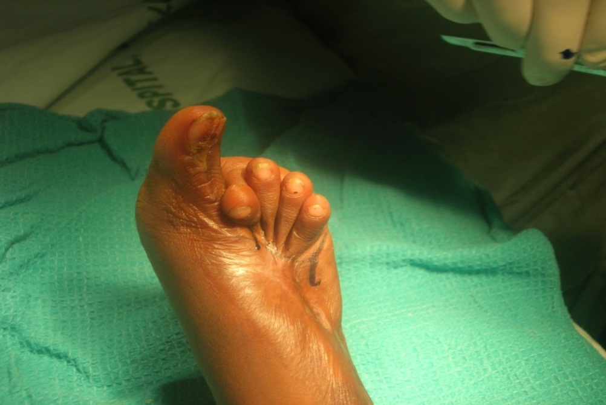
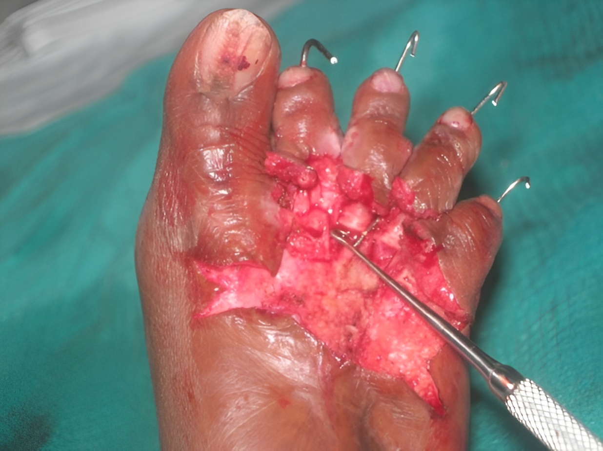
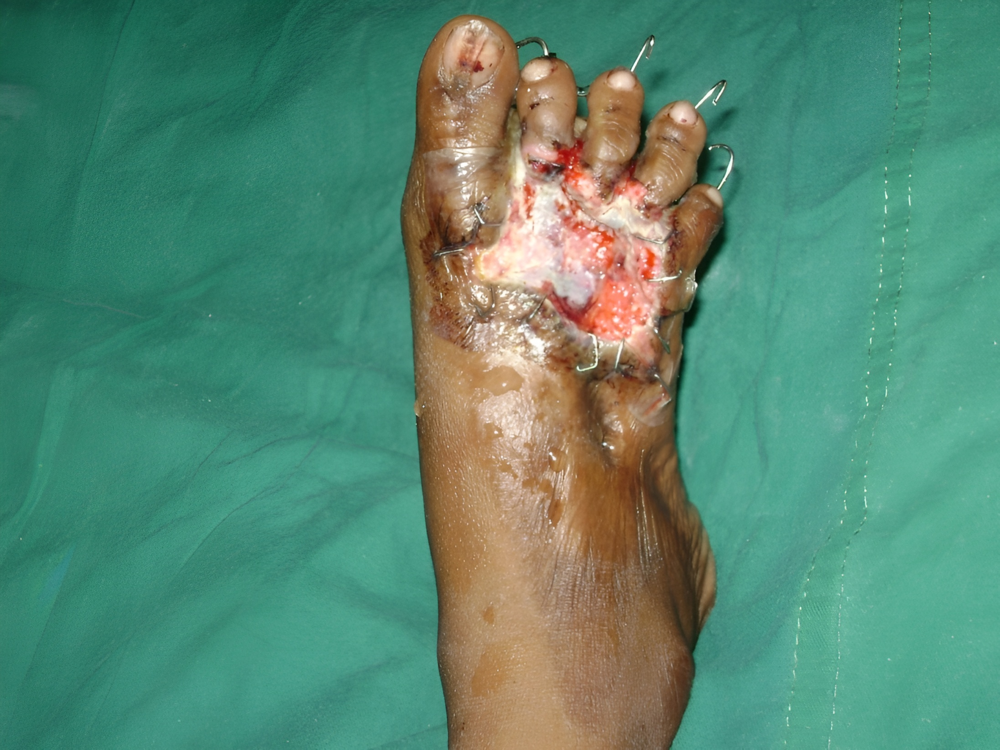
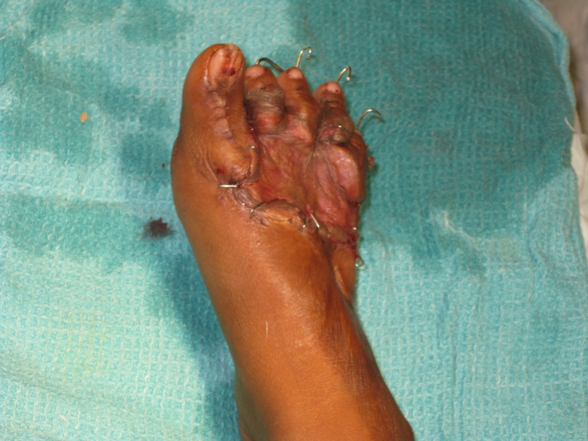

Orthopedic Surgery
Implantable, bioresorbable, tissue regenerative sterile Type-I Collagen matrix. Designed for reconstructive surgery, chronic wounds, diabetic ulcers, burns and soft tissue repair.
Download Brochure
Damaged cartilage parts can be repaired by inserting Surgicoll-Mesh® or can be removed altogether and replaced with Surgicoll-Mesh®. Used in knee joint cartilage repair via minimally invasive surgery to treat injuries to bones, cartilage, ligaments, muscles and tendons.

Surgicoll-Mesh® can be effective in reducing inflammation of joints and in promoting repair of synovial membrane and articulating cartilage. It can be used in surgical repair of damaged joints that would cover/replace synovial membrane while also reducing pain. Surgicoll-Mesh® may readily conform to the size and structure of the human synovial capsule thereby ensuring appropriate coverage of the damaged synovial membrane. Usage of Surgicoll-Mesh® could also eliminate the need for removal/replacement of the joints.
Surgicoll-Mesh® can be used for the treatment of both partial- and full-thickness rotator cuff tears. In case of partial-thickness tears, the product can be directly applied on the site of injury. However, in the treatment of full thickness tears, it is advisable to repair the injury as per the Surgeon’s preferred method and then apply Surgicoll Mesh® over the repaired site.
The absorbable Surgicoll-Mesh® would support the body’s natural healing mechanism by facilitating the formation of new tendon-like tissue at the site of rotator cuff tear. As this product gradually degrades over time, a significant increase in the overall thickness of the native tendon can be observed through the induction and remodeling of tendinous tissues.

Surgicoll-Mesh® provides excellent coverage over exposed bone, tendon, cartilage and joints - the need for a flap cover is circumvented.




Citations